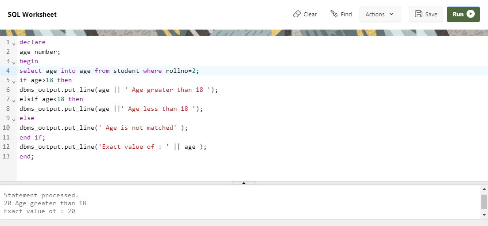

Decision control structure
The structure of the PL/SQL IF Statement is similar to the structure of IF Statement in other Procedural Language. It allows PL/SQL to perfrom actions selectively based on conditions.
There are three forms of IF Statement :
(i) IF- THEN Statement
(ii) IF- THEN- ELSE Statement
(iii) IF- THEN- ELSIF Statement
(i) IF- THEN Statement
if then statement if then statement is the most simple decision-making statement. It is used to decide whether a certain statement or block of statements will be executed or not i.e if a certain condition is true then a block of statement is executed otherwise not.
The Syntax of IF- THEN Statement
IF condition THEN
statement;
END IF;
The Example of IF- THEN Statement
declare
a number;
b number;
begin
a := 10;
b := 5;
if a>b then
dbms_output.put_line('A is greater than B');
end if;
end;

(ii) IF- THEN- ELSE Statement
The if statement alone tells us that if a condition is true it will execute a block of statements and if the condition is false it won’t. Here comes the else statement. We can use the else statement with if statement to execute a block of code when the condition is false.
The Syntax of IF- THEN- ELSE Statement
IF condition THEN
statement;
ELSE
Statement;
END IF;
The Example of IF- THEN- ELSE Statement
declare
age number;
begin
select age into age from student where rollno=4;
if age>18 then
dbms_output.put_line(age ||' Eligible to vote');
else
dbms_output.put_line(age ||' not Eligible to vote');
end if;
end;


(iii) IF- THEN- ELSIF Statement
The IF-THEN-ELSIF statement allows you to choose between several alternatives. An IF-THEN statement can be followed by an optional ELSIF...ELSE statement. The ELSIF clause lets you add additional conditions.
The Syntax of IF- THEN- ELSIF Statement
IF condition THEN
statement;
ELSIF condition THEN
statement;
ELSE
statement;
END IF;
The Example of IF- THEN- ELSIF Statement
Declare
age number;
Begin
if ( a = 10 ) THEN
dbms_output.put_line('Value of a is 10' );
ELSIF ( a = 20 ) THEN
dbms_output.put_line('Value of a is 20' );
ELSIF ( a = 30 ) THEN
dbms_output.put_line('Value of a is 30' );
ELSE
dbms_output.put_line('None of the values is matching');
END IF;
dbms_output.put_line('Exact value of a is: '|| a );
END;
